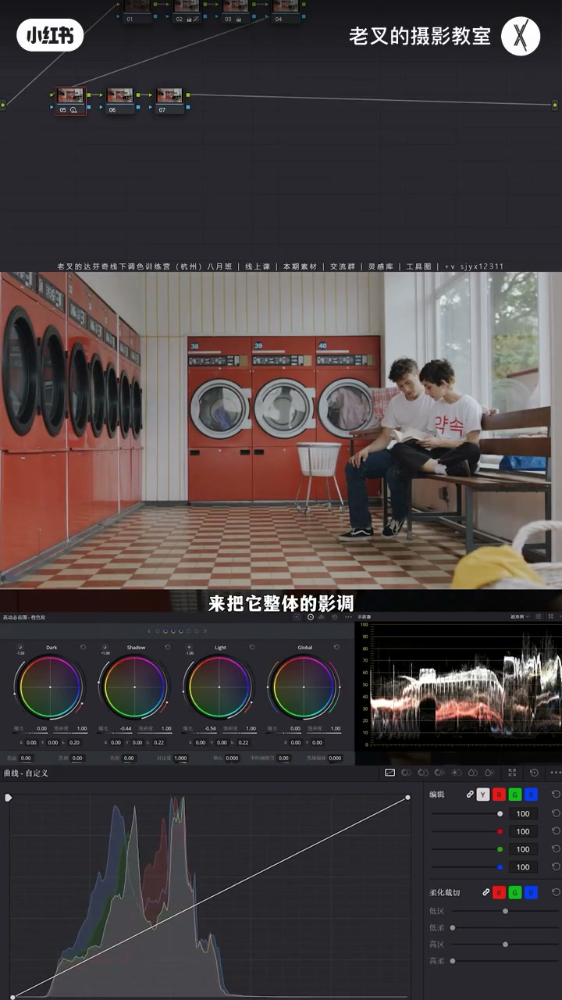
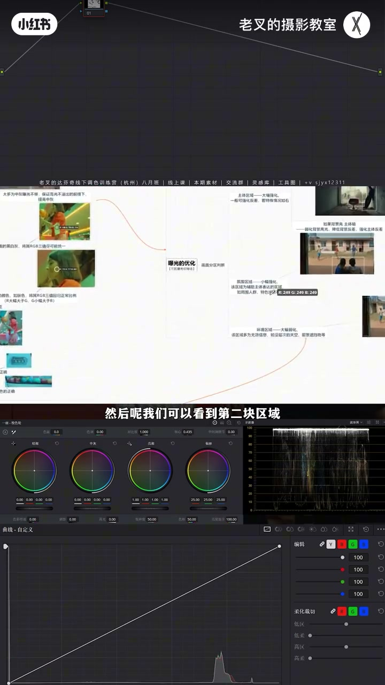
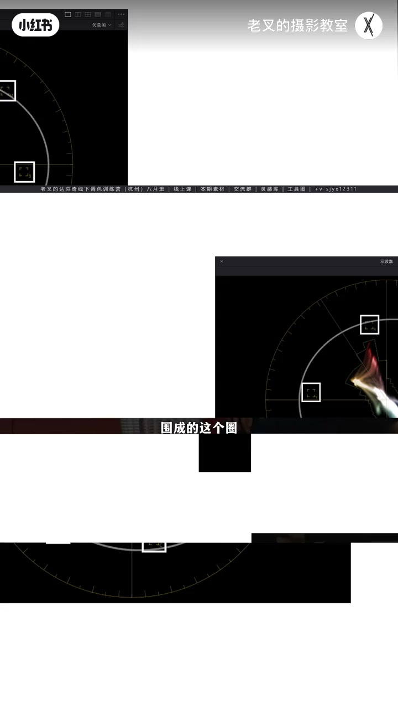
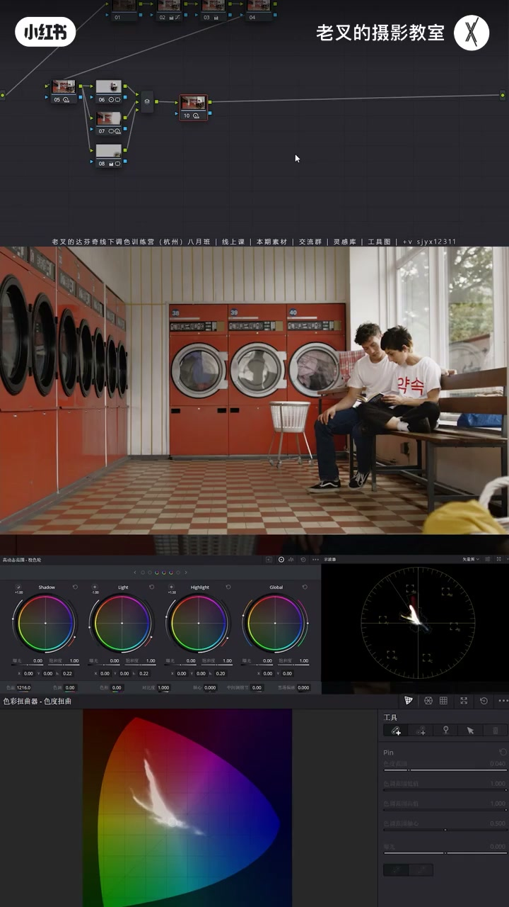
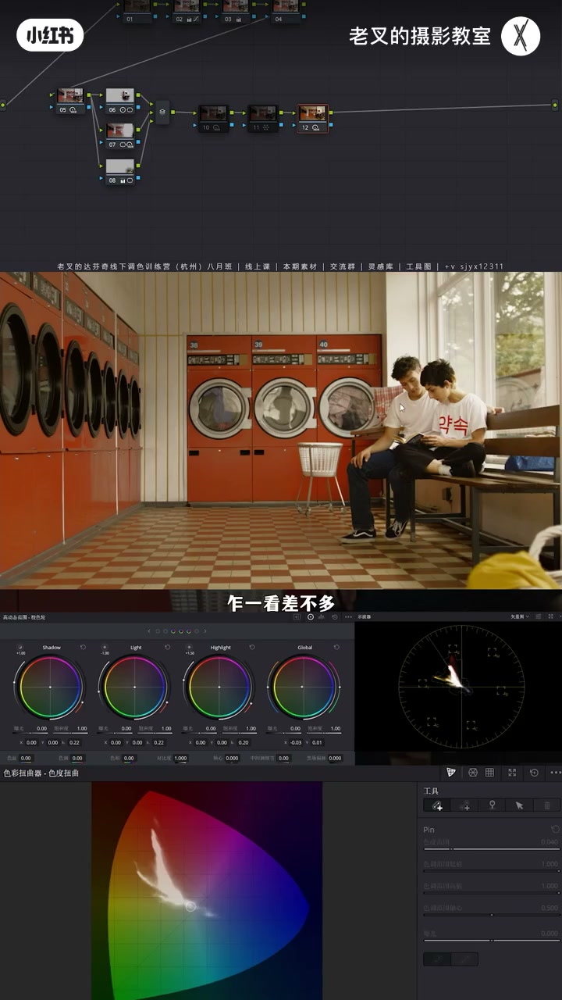
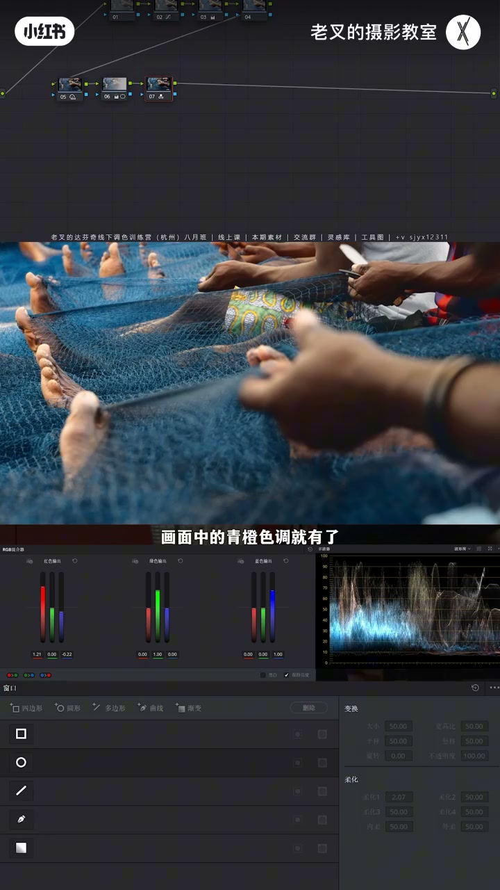
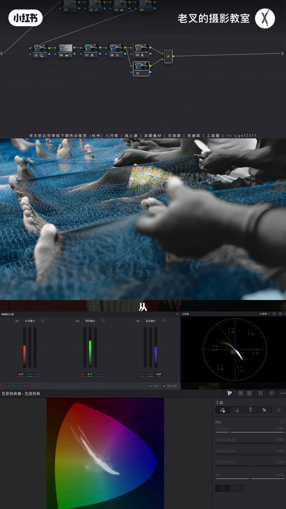
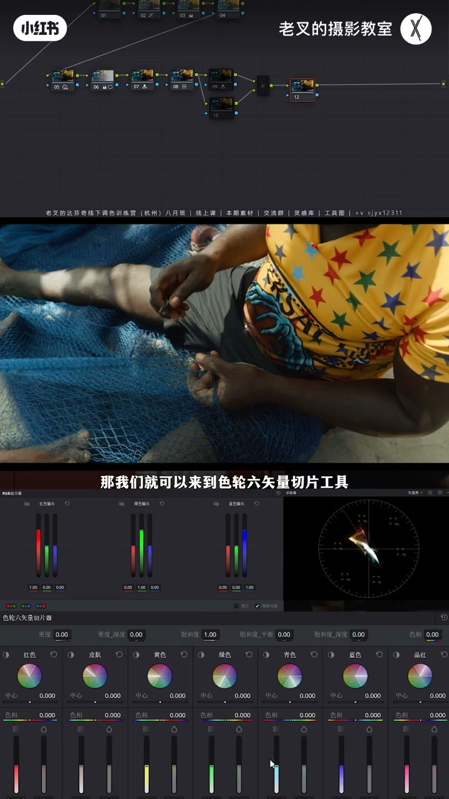

内容要点
客户嫌饱和度太高时，向量图不够用——它没有曝光信息。老叉先演示可全局偏色案例：曝光分区后，与其猛降红饱和伤肤色，不如整体偏暖贴近跳色再微降红；HDR 色温比一级轮更易统一色相。不能全局偏色时，用图层「深色」+黑白混合露出残留高饱和区，或复合后用限定器饱和度低区选出再微降；高明度色只降饱和会惨白，应提高密度再降饱和。
知识结构
夕阳影调：降 Shadow/Light、抬 Highlight；主体对比；氛围可立体或「平但不灰」。
向量安全框≠观感；整体偏暖贴近红洗衣机再微降红；HDR 色温比一级轮更统一。
暗部本黑物体查 RGB；一级轮降暗部红通道；逆整体倾向回调。
图层深色+黑白显残留高饱和；或限定器饱和低区微降；高明度色提密度再降饱和。
客户屏不可控；调太久会习惯高饱和；深色法补向量图盲区。
向量图只能看色相饱和，看不见「艳/深」。能全局偏色就让环境向跳色靠拢再微降；否则用深色混合定位残留高饱和，高明度色记得提密度。宁小幅、保肤色。
00:00-03:50立题与曝光：主体突出，氛围立体或平而不灰
被嫌饱和度太高很常见。向量图能辅助看饱和与色相，但不等于观感正确。还原后颜色多（洗衣机红、黄袋、绿树、蓝袋），先正常调：拍摄偏晚，按夕阳方向降 Shadow/Light、抬 Highlight 护高光，整体往暗调走。
流程图曝光优化：大幅强化主体人物——遮罩略大，首选对比度+轴心略亮。氛围是室内其余：并行节点给人物/窗/黄袋画遮罩再反转，选出其余。要立体就加对比并略降饱和（对比会抬饱和）；要「平一点又不灰」：降 Light、抬 Shadow 并调范围覆盖洗衣机，再压 Dark 去灰、抬 Highlight 找回玻璃反光——注意别过曝死黑。


03:50-08:30跳色：整体偏暖贴近，再微降红；HDR vs 一级轮
黄袋扎眼：大柔化遮罩降曝光并略提亮防闷。观感上室内红洗衣机抢戏，向量上红接近安全框但未完全溢出——猛降红会伤整幅与肤色；遮罩可选但麻烦。
他重置后分析主色是肤色橙红与面积最大的洗衣机红：用 HDR 色温整体略暖，让环境向红靠拢，饱和未动红却不那么跳；再微降红，肤色与风格保留更好。
HDR 色温让颜色往目标统一靠近；一级校色轮更像平移加色、色相差保留更好——对比静帧：HDR 让蓝袋更偏紫，一级轮蓝仍蓝，结果蓝袋又变新跳色。需改色相时 HDR 更自然；小幅时两者差别几乎看不见。全局染色还要注意黑平衡。


08:30-10:00黑平衡与第二案例：不能全局偏色时
右键显示 RGB，限定器模式点暗部本黑物体（如黑裤）：红略高则一级轮切模式略减暗部红通道，整体更干净。黑平衡是逆着整体颜色倾向回调，也有助压暗部过高饱和。可加柔和对比度去刺眼。
第二例还原后偏平：街上光影判断夕阳，同样压 Shadow/Light、抬 Highlight；渐变顺光强化；黄蓝并存可 RGB 混合器做青橙。向量上红黄已溢出，降红/黄/橙拉回后向量「好像没事」，缩小看仍很艳——向量不够用了。

10:00-12:40万能检测：图层深色混合 + 密度降艳
建节点后 Alt/Option+L 建图层，合成改深色，上层 RGB 混合器变黑白——残留彩色就是仍偏高饱和区。人眼觉得「艳」可能是饱和高，也可能太深/太亮；向量没有曝光信息。可针对性降蓝等。
或把两节点+图层混合器做成复合节点，限定器饱和度低区填约 0.1，Shift+H 只高亮高饱和区，再微降饱和（动太大选区会歪）。
第三景：深色法见网与衣服高饱和。蜘蛛网只降衣服饱和会惨白——明度仍高。应到色轮 60° 切片提高橙黄密度（降明度并略降饱和）再调，比单纯降饱和舒服；蓝同理微降。


12:40-13:37审片环境与习惯：客观工具防「看腻」
客户审片环境与屏幕不可控，必须保证不腻、无溢出风险。调同一画面过久会对高饱和脱敏。向量找不到全部答案时，更需要深色这类客观辅助。有帮助就三连。片尾书籍广告略过；本期完。

完整转录（112段）
以下文本由 Whisper medium 模型自动转录，可能存在少量识别误差，已尽可能修正。
有多少朋友被客户或者领导嫌弃过画面饱和度太高 该如何正确的弱化饱和度呢
我们知道达芬奇有一个适量图的工具 能够辅助判断饱和度和色相的情况
但是适量图告诉你的就一定是正确的嘛
我们看到这个画面经过我们简单还原能够看到画面中的颜色还是比较多的
对吧 袭击的红右下角的黄 这里还有绿树和蓝色的袋子 那先不管它颜色 我们先正常调
这个片段的拍摄的时候是比较晚的 我们要让它照着夕阳的方向去做 在五号节点中 我们可以通过降低shadow色轮的曝光
以及light色轮的曝光 来把它整体的引调稍微往暗角走一点点 但是这样做了之后 它的高光会被压太厉害 对不对
所以呢 我们要稍微提高一点点highlight色轮的曝光 来把它的高光给找回来
好 我就到这差不多 我们看到画面高光是不是保留 然后整体是往暗角走 这样调就能够更符合夕阳的一个质感啊 然后呢 我们可以找到在
小程序中的调色工具包 打开之后 这里有个流程图啊 我们可以通过流程图中来找到这里的曝光优化
第一步呢 我们一定是先找到主体区域 我们要大幅强化它 对不对 那这个画面中主体是谁 那不用想 一定是这个人物
所以我们给他先大致的话 一个遮罩的话 可以开的稍微大一点点 要大幅强化人物首选的工具 我建议大家先考虑对比度工具啊
因为它好操作 实现不了我们再考虑别的工具 我们先给画面增加一点对比度
我就到这差不多 然后配合轴心来让它的曝光去做调整啊 我就可以让它稍微亮一点点 这样调整了之后 人物是不是更加突出了 对吧
然后呢 我们可以看到第二块区域 也就是氛围区域 我们小幅强化它 对这个画面氛围区域是谁
那自然就是室内的其他的部分 对吧 那我们可以来一个 并且节点按住lt加p或者是option加p给人物和窗户
以及右下角这个带子一起画个遮罩 遮罩画好了之后 我们给它一个反转 这样呢就可以选出室内的其余部分 对吧 对这一部分我们小幅强化
那这里有两个强化的思路啊 如果说你想要让它更加立体 那么你就可以直接给它增加对比度 增加点对比度 然后降低点饱和度
因为加对比度的行为会增加饱和度嘛 那这样呢就能让它更加立体 但如果说你不想让它那么立体 但又不想让它变灰 也就是让它稍微平那么一点点啊
我们该怎么做呢 这也是一个很常见的风格 我们可以考虑先降低light色轮的曝光
我们可以通过点击htr色轮 每个色轮左上角的这个圆圈就能够看到它对应的一个范围啊
如果你对这个默认的范围不太满意的话 可以拖动左边这个白色的拨杆 白色的滑块
让它去改变你这个色轮对应的一个范围 我可以让它稍微暗一点 能够覆盖到更多的洗衣机的部分
降低了light色轮之后 我们可以再提高一点点shadow色轮的曝光 目的就是让它这里能够灰那么一点点啊 不一样的 我们也可以改变shadow色轮的范围
让它能够覆盖到更多的洗衣机部分 此时我们就让这个世界变平了 对吧 但是变平了也变灰了 那我们怎么解决这个灰的问题 只需要
稍微压低一点dark色轮的曝光 我们可以看着左边这里的暗部 当我们降低了dark色轮之后 它这一块它就变得更黑了啊 就没那么灰了
那暗部要调整 亮部也要调整 所以我们可以稍微再提高一点highlight色轮的曝光 来让这里的反光面 也就是这个玻璃啊 让它的高光能够回来一点
那么这样的调整就能够让这一部分又平又不灰 这个风格大家可以参考一下 要注意不要过曝和死黑了 特别是死黑 千万要小心
那至于这两个效果你要选哪个 你可以自己去判断 然后呢 就是右下角这个黄色袋子啊 这个黄色袋子太扎眼了 我们肯定是要给它弱化的
柔化可以开的大一点 然后我们要弱化它 那自然就是让它看不见 所以呢 可以考虑降低一点它的曝光
还是那句话 要一按就不能只一按 我们还得稍微体谅 不然它这就太闷了 对吧
以这样的一个形式 我们就顺利的把主体突出了 并且室内也赋予了一个想要的一个风格
这样调完了之后 我们重点就来了 大家觉得此时这个画面中饱和度舒服吗
可以发个弹幕讨论一下啊 同时借助的适量图来去查看
其实客观说红色的饱和度 也就是室内的这个红色的袭击 它其实是有点抢系了 对吧 我们看到适量图也是一样 我们要注意的一个点啊 适量图的这几个色彩定位的方框
围成了这个圈 可以视作我们颜色的安全框
靠近或者超出 那就有颜色溢出的风险 我们红色其实是接近啊 但它还是有点距离 没有达到那种完全溢出的那种情况
但是画面中从观感上来讲 红色就是太强了 那既然红色太强
我们第一考虑的肯定是降低红色的饱和度 对不对 降低这里的饱和度 因为它这里的色相覆盖了这两个扇形吧 所以我们这边也要给它稍微降低一点
我们看到降低了之后 红色确实是饱和度降低了 但是整个画面
包括肤色 颜色牺牲的是非常非常多的
那你说我们可以用遮罩去选 那当然是可以的 但太麻烦了 那还有没有别的办法能够调整的更加自然呢
我们把它这里给重置了 我们已经知道红色没有溢出 但是它作为画面中最明显的物体 并且颜色和周遭环境非常独立
所以它会显得很抢心 我们可以考虑让整个画面去靠近它 怎么靠近呢 我们分析一下画面中主要颜色是谁
一个是肤色的橙红色 另一个就是画面中面积最大的洗衣机的红色
此时我们就该考虑让整体画面往暖的方向去偏 也就是用色温 我们将色温给它往右拉 拉暖那么一点点
我就到这里差不多 此时我们看到 饱和度没有做任何的改变 但是红色的洗衣机就没有那么突出抢心了 对不对
那此时呢 我们再稍微降低一点点红色的饱和度 你会发现降低一点点效果就非常明显 而且因为我们降低的幅度很小 整体画面颜色的风格也保留的不错
肤色也保留的不错 对吧 肤色该有的颜色都有 那我们这个行为
就是解决了画面中某一个单一颜色特别跳的问题 那既然你跟别的颜色格格不入 我就让别的颜色向你靠近 让你不那么突出 这样就可以在不用知道的前提下 让画面中没有那种特别突出的颜色
那此时不知道大家有没有疑问啊 你看到我用的是HDR色轮的色温 那一级叫色轮的色温行不行啊 我们可以看一下区别 我把这两个先隐藏了 我们可以盯着适量图去看啊
当我们用HDR色轮去改变颜色的时候 你会发现画面颜色会往目标方向去靠近 也就是说当我们给画面调暖了之后 所有的颜色都会更加统一的往暖色方向走 对吧 就会往我们目标方向去改变颜色
而一级叫色轮则不一样 一级叫色轮的偏颜色轮我们改变颜色之后 画面中的色相几乎是以平移的形式去改变的
也就是说颜色之间的色相差保留的更好 那它就像是给画面加颜色啊 我们可以给画面抓一个竞争 那此时这个竞争是一级叫色轮调整的颜色 我们把这个节点给它重置了
然后用HDR色轮给它改差不多力度的一个颜色 好 此时我们看到两种操作方法对画面的影响基本上是一样的 对不对
左侧的是一级叫色轮调整的 右侧的是HDR色轮调整的 乍一看差不多 但是我们放大看这个蓝色的带子啊 我们看到
右侧HDR色轮调整的这个蓝色带子 它会更接近于紫色 因为蓝色加了黄色会往紫色方向走 而一级叫色轮也就是左边这个画面蓝色依旧是蓝色
也就是说 如果用一级叫色轮 我们能够解决袭击颜色太突出的问题 但是蓝色带子又变成了突出的颜色 这就有点得不偿失了 对吧
所以我们在需要改变色相的时候 用HDR色轮改颜色会更加自然
这是他们之间的一个区别 但是我必须要客观讲 在你小幅调整的时候 两个区别几乎看不见啊 所以不用特别纠结 有些时候
对于这种全局染色的画面 黑平衡一定要注意啊 也就是画面中处在暗部的 并且本色为黑色的物体 比如说这位女生的裤子
我们可以在画面中右键勾选显示 十色加GB值 然后把鼠标切换成限定器模式 把鼠标放在黑色物体上
能够看到这位女生的裤子 它的红会稍微高那么一点点 就是二指会稍微高那么一点点
所以呢 我们可以在后面跟一个节点 用一级校色调 我们在一级校色轮右上角这个位置可以切换它的模式 在一级校色调中稍微减少一点点暗部的红色通道的数值
我们只需要给它稍微降低那么一点点 然后此时我们看
红色跟其他的两个通道的颜色是不是几乎一样了 对于画面整体来讲 颜色也能够更加干净 这个
调整会非常细微啊 但是得做啊 让你的画面不会那么脏 黑平衡的调整其实就是在
逆着你整体颜色倾向的方向去做回调
所以也能在一定程度上去减少你画面整体 特别是暗部的饱和度过高的一个问题
最后呢 可以考虑来一个柔和对比度啊 当然这个我觉得你也可作可无作
对于这个画面来讲 我是希望他画面不要有任何刺眼的部分存在 所以我会给他来一个柔和对比度
这样调就差不多了
这个案例呢 是你能够全局偏色的画面 但如果你的画面不支持全局偏色 我们该怎么办呢 比如这个画面我们还原后
能够看到啊 这个画面的影调其实是不到位的 还原之后画面很平 对吧
我们可以通过脚上的光影 能够大概判断出来 这也是夕阳十分拍摄的 所以我们要强化他的影调 让他往暗调走
所以呢 我在五号节点 因为去加色轮 同样的
降低了shadow和light色轮的曝光 提高了highlight色轮的曝光 那么就可以得到一个这样的效果 这个思路其实跟上个画面差不多啊 然后呢 我们也可以考虑给画面
用一个渐变之道 顺着光的方向把光稍微强化一点 让画面能够有亮点 那因为画面中有黄有蓝 那自然然的就会想到来个青橙色调 也就是用2gb混合器提高红色输出中的红色通道的数值
降低蓝色通道的数值 将一条画面中的青橙色调具有了
调完之后 我们能够发现啊 画面中整体的饱和度其实是非常非常高的 从适量素上也能够得到答案
红色非常高 它肯定是溢出了 黄色也很高
那既然知道了答案 我们就可以降低对应的颜色的饱和度 也就是把红色给它降低一点点 红色是哪里啊 就是这个衣服上啊 这个人的衣服上这个红色
给它饱度降低点 让它往橙色方向走一点 同时黄色的饱和度也降低
橙色的饱和度也稍微降低点 让它能够把这些溢出的颜色都给它拉回来 降完了之后 我们再看画面
此时画面的饱和度就真的没问题了吗 适量图上看好像是没什么问题 但是其实你会发现画面颜色就是太艳了
大家可以把画面缩小了来看啊 缩小了看会看得更明显 来说的这么小 对吧 这个画面颜色就是很艳的 那既然适量图无法告诉我们答案 我们有没有什么更好的方式去做判断呢 这里有个小技巧 我们可以先建立一个节点 然后按住out加L或者是option加L
建立一个涂层节点 在涂层节点中将合成模式改成深色 并且给上面这个节点中用2GB混合器把它变成黑白 那此时我们会发现
画面中保留了一部分颜色 而保留的这些颜色就是我们调整后还是高饱和部分的颜色
那这里呢 我要提出一个观点啊 从我们人眼观感上认为的高饱和颜色不一定只是饱和度高
也有可能它太深了 或者它太艳了 而适量图只能告诉你色相和饱和度的信息 它并没有曝光的信息 所以它并不全面 我们就需要借助这种方式来观察
那此时呢 我们已经找到哪些颜色饱和度还是很高的 也就是这些蓝色部分 对吧 那这样呢 我们就可以针对性的降低蓝色的饱和度
或者还有一个方法 就是把这个涂层节点这三个东西 两个节点加上一个涂层的混合器 这三个东西全选右键给它创建复合节点
它会变成一个节点 在这个节点中 我们用限电器的饱和度选项 在低区中 也就是最左侧这个选项中 输入一个0.1 然后呢 按住shift加h 打开突出显示
此时画面中就只会选出这些高饱和部分了 那对于这些内容 我们只需要稍微给它降低一点点饱和度就可以 不要降太多 降太多
虽然我们只用了饱和度选项 并且我们调整的只是饱和度 但是如果动太多的话 选区也会有问题的 这样调整了之后 我们看画面的变化是不是颜色就变得更加耐看了
那还有一种情况 那比如说这个画面 我们把它拉到有光的这一部分
我们同样用一个深色的模式来找到画面中有没有哪些是高饱和部分的颜色 画面中高饱和的有这个网 同时还有人物的衣服
那对于人物的衣服 我们怎么去调整呢 我们可以先用蜘蛛网去针对性的调整 我们看效果啊 降低一点对应的颜色的饱和度 我们看到
降低饱和度之后 衣服变灰了 啊 这个是什么原因呢
是因为原本这个黄色的明度太高了 如果我们只是降低饱和度 它高明度的这件事情还是保留的 所以它就会变得特别的惨白
所以我们真的要降的不只是饱和度 我们还得降低它的明度 哎 听到这个是不是很熟悉
提高密度就可以在降低明度的同时还能小幅降低饱和度 对吧 那我们就可以来到色轮60张切片工具
稍微提高一点点肤色 也就是橙色以及黄色的密度 然后呢 降低点他们的饱和度
我们看到 是不是以这样的方式降低的饱和度会更加舒服 比起刚刚要好很多 对吧 至少它不灰了 那蓝色肯定是要降的 跟刚刚是一样的 我就不演示了
这一期分析的三个思路 大家可以参考一下 重点还是利用深色这个方式来检查饱和度的问题
很多时候你无法改变客户的审片环境 你不知道客户的屏幕好有坏的
所以你必须要保证你的画面看着不腻 颜色没有溢出的风险 而且当你对一个画面调色的时间一旦过长
你就很有可能会无法看出颜色溢出的情况 因为你看着这种滑度特别高的颜色 看着看着你会习惯 从而导致你无法去辨别出它真正有没有溢出
再加上有些时候你不能用适量图去找到所有的答案 这时候呢 就更需要一个客观的工具来辅助判断 如果这一期对你有帮助的话 还希望多多散联 好了 这期就到这里886
哈喽 大家好 我是老叉 这是我的第一本书 是一本关于达芬奇调色软件工具解析的书 比说明书更详细 比说明书更易懂 剖析每项工具的底层逻辑
如果你是新手 那你就能靠这本书快速掌握达芬奇 如果你已经是行业从业人员 则可以了解达芬奇调色工具的核心逻辑来解决调色没思路的问题
有别于目前多数犯奖概念的书 无时钟认为什么都讲等于什么都没讲 一个大概不如不听 我的这本书讲原理 讲逻辑 还讲英勇 只讲调色 才能让大家掌握调色 清华大学出版社官方旗舰店有售